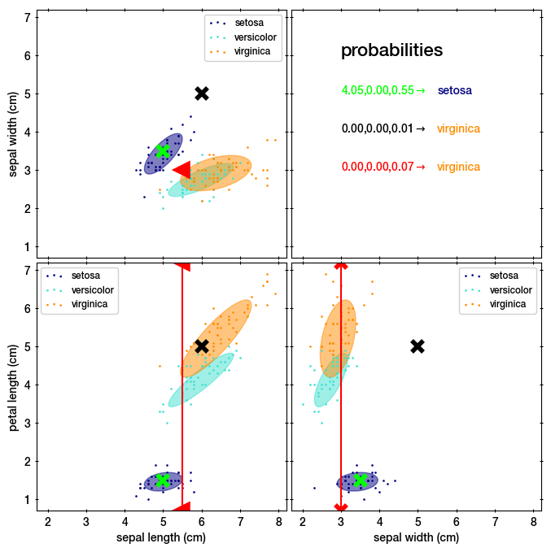

Welcome to askcarl’s documentation!
askcarl
Gaussian Mixture Model with support for heterogeneous missing and censored (upper limit) data.
Pure python.

About
Gaussian mixture models (GMMs) consist of weighted sums of Gaussian probability distributions. They are a flexible tool to describe observations, and can be used for classification and model density approximation in the context of simulation-based inference.
Missing data can occur when no measurement of a given feature was taken. In that case, the probability of a GMM density can be obtained by marginalisation. This is implemented in askcarl analytically. This is different to pygmmis, which approximates this situation with large measurement uncertainties. This is different to gmm-mcar, which assumes that missing measurements occur uniformly randomly.
Upper limits can occur when the measurement of a given feature was not sensitive enough. In that case, the probability of a GMM density can be obtained by marginalisation up to the upper limit. This is implemented in askcarl analytically, and each data point can have its own individual upper limit (heterogeneous). This is different to typical censored GMMs, which assume a common upper limit for all data (homogeneous) (see here for example).
For these cases, askcarl implements evaluating the PDF and log-PDF of a mixture. askcarl does not implement finding the mixture parameters.
Just ask Carl Friedrich Gauss for the probability.
Example
Lets take the Iris flower data set (dots), and learn GMM as in this scikit-learn example:
iris = datasets.load_iris()
X = iris.data[:,:3]
y = iris.target
gmm = GaussianMixture(n_components=3)
gmm.fit(X)
This gives us a mixture with three Gaussians (shown as ellipses):
Lets import the learned mixture into askcarl:
mix = askcarl.GaussianMixture.from_sklearn(gmm)
Now, we compute the probability of a few points:
the lime point in the blue setosa region, with coordinates (5, 3.5, 1.5).
the black point not near any cluster, with coordinates (6, 5.0, 5.0).
the red point, which has a upper limit on the sepal length <5.5, sepal width=3, and is missing data on petal length.
We can encode this information as follows:
x = np.array([
[5, 3.5, 1.5],
[6, 5.0, 5.0],
[5.5, 3, np.inf],
])
mask = np.array([
[True, True, True],
[True, True, True],
[False, True, False],
], dtype=bool)
Now we can ask for the probability to belong to each cluster:
resp = np.array([g.pdf(x, mask) for g in mix.components])
print(resp) # shown in the top right panel
#> [[4.04951446e+00 9.35236679e-97 5.54554910e-01]
#> [2.81243808e-28 2.16218666e-35 6.52744205e-03]
#> [3.34489158e-14 1.69515947e-12 6.53231941e-02]]
# and the most probable corresponding class:
print(resp.argmax(axis=0))
#> [0 2 0]
Here we see that the first (lime) point is assigned to setosa, with a high probability. The second point has low probability in all classes. The third point is assigned to the last class, virginica.
Finally, we can compute the probability given the positions:
p = mix.pdf(x, mask)
print(p)
#> [1.34983815e+00 8.13140712e-13 2.17406640e-01]
Here we see again that the second point has very low probability, indicating it is an outlier.
The third point, despite the missing data and upper limits, could be handled without needing to modify the original mixture.
Why
askcarl can be used for likelihood-based inference (LBI) with simulation-based inference (SBI) generating samples, a EM algorithm identifying the GMM parameters, but applied to data with missing data or upper limits.
This is a common case for photometric flux measurements in astronomy.
Usage
Read the full documentation at:
Licence
GPLv3 (see LICENCE file). If you require another license, please contact me.